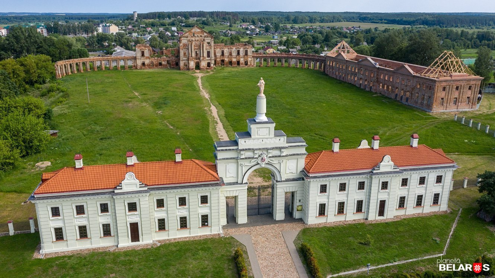

Замки Брестской области – это величественные сооружения, которые с гордостью украшают исторические земли этого региона. Интригующие своей архитектурой и богатой историей, они являются важными достопримечательностями и привлекают внимание туристов со всего мира.
Брестская крепость
Адрес: ул. Героев Обороны Брестской Крепости, 60, Брест.
Крепость расположена в черте города, у впадения Муховца в Западный Буг. В 1829 году Карл Иванович Опперман создал проект фортификации. Основные строительные работы были завершены уже к апрелю 1842 года. Брестская крепость прославилась в ходе Великой Отечественной войны. Ровно с началом войны 22 июня 1941 года она встретила нападение немецких войск. Штурм продолжался около месяца, на 32 день войны пал последний ее защитник. Сейчас это мемориальный комплекс, в котором проводятся различные экскурсии, лекции, музейно-педагогические занятия и так далее. Он расположен на Цитадели и на части Кобринского укрепления. Основные объекты, которые можно посмотреть: фортификации, скульптурная композиция «Жажда», главный монумент, штык обелиск и три яруса гранитных плит, под которыми погребены останки более тысячи человек, оборонявших крепость летом 1941 года. На плитах начертаны имена известных 276 человек, остальные остались неизвестными.
Дворец Пусловских в Коссово
Адрес: ул. Тадеуша Костюшко, 108, Коссово.
Строительство этого комплекса началось в 1838 году по проекту Франтишека Яцолда. Генрик
Маркони занимался обустройством интерьеров Коссовского дворца Пусловских. Стиль замка — готика и неоготика,
нетипичный для XIX века. Стилистика особенно ярко проявляется в зубчатых башнях и стрельчатых окнах.
План замка включает 12 зубчатых башен, каждая из которых символизирует определённый месяц года, а 4
центральные башни отождествляемы с сельскохозяйственными месяцами — маем, июнем, июлем, августом.
Усадьба была дополнена просторным парком, в котором была оранжерея для редких растений. Дальнейшая судьба
дворца печальна. Он многократно перепродавался, несколько раз разрушался в ходе войн. До 2009 года замок был
в руинах. В Коссовском дворце сейчас завершается реставрация.
Часовня-усыпальница Ожешко (Закозель)
Адрес: Дрогичинский район, агрогородок Закозель, Пейзажный парк.
Усыпальница рода Ожешко в Закозеле выполнена из белого кирпича в неоготическом стиле, чем и привлекает туристов. До сегодня часовня была заброшена, но сейчас начались работы по реконструкции. Место Закозель упоминается в письменных источниках еще со времён XIII века, но наиболее известным оно стало при семье Ожешко. Одной из самых известных представительниц фамилии была Элиза Ожешко — польскоязычная писательница. Усыпальница, по разным данным, была построена в 1839 или 1849 году. После польского восстания 1863 года род Ожешко подвергся репрессиям и имение пришло в запустение.
Беловежская пуща
Координаты: 52.574210, 23.804786.
Беловежская пуща представляет собой крупный остаток реликтового леса. Ее площадь — 150 га, всего 120000 видов фауны, а флора насчитывает 1024. Увидеть заказник можно, прогулявшись по пешеходным дорожкам. Есть также автомобильные и велосипедные маршруты. В Беловежской пуще можно взять тур фотоохоты и, прогулявшись по лесу, сделать фотографии редчайших животных. Стать ближе к природе можно, выехав на пикник в этот лес. Также в пуще есть гостиницы для всех желающих погрузиться в атмосферу леса.
Музей Каменецкий детинец
Адрес: ул. Ленина, 3А, Каменец.
Филиал Брестского областного краеведческого музея располагается в Каменецкой башне. Детинец — это памятник зодчества XIII века. О Каменце сохранилось упоминание в Ипатьевской летописи, где говорится, что его срубил зодчий Алекса по приказу Владимира Васильковича. В Каменецком детинце располагался терем князя. Позже была сооружена башня. В настоящее время музей представляет экспозицию на пяти этажах башни. Выставка рассказывает об истории Каменца и каменецкой башни в периоде с XIII по XVI века.
Усадьба Котлубаев (Ястрембель)
Адрес: Барановичский район, Малаховецкий сельсовет, деревня Ястрембель.
Усадьба рода Котлубаев в деревне Ястрембель привлекает внимание необычной стилистикой. Деревня перешла во владение этой династии весной 1851 года. Частично строительством дома занимался Эдвард Котлубай — инженер по образованию, именно он спроектировал усадьбу. Но усадебный дом, который можно видеть сейчас, датируется 1897 годом и был построен потомком Эдварда Генрихом Котлубаем. Планировка дома включала 18 комнат, стены каждой из которых были украшены лепниной и фресками античной тематики. Но интерьеры усадьбы Котлубаев не сохранились. После прихода советской власти последний владелец Зигмунд Котлубай был арестован. С 1970-ых годов здание использовалось как помещение для школы-интерната. И сейчас усадьба находится на ее территории, но к ней есть доступ для туристов.
Усадьба Швыковских (Пружаны)
Адрес: Советская ул., 50, Пружаны.
Усадьба эта достигла расцвета при Валентии Швыковском, который унаследовал её от отца. Швыковские владели особняком до 1895 года. Имение построили вместо деревянного дома в середине XIX века. По легенде, проектировал его польский архитектор Франтишка Ланции. Форма дома напоминает итальянскую виллу, что весьма необычно для стилистики домов белорусской шляхты. Помимо самого особняка, сохранился флигель и парковая зона. В настоящее время внутри усадьбы располагается музей. Найти усадьбу несложно, она располагается на улице Советской в исторической части Пружан.
Ружанский дворец Сапегов

Адрес: ул. Урбановича, 15А, Ружаны.
Ружанские земли были приобретены Сапегой в 1598 году, сразу после этого началось строительство дворца. Замок окружали массивные башни, поэтому дворец Сапег больше походил на неприступную крепость. В середине XVIII века Ружанский дворец претерпевает перестройку, которой руководил архитектор Беккер. Его внешний вид значительно изменяется, а также в резиденции появляются новые здания — часовня, костёл и монастырь базилиан. В Ружанском дворце была огромная библиотека, театр и одна из лучших картинных галерей в Европе. С разделами Речи Посполитой Сапеги были вынуждены покинуть Ружаны и сдавали в аренду замок. Там работала суконная фабрика. Польское восстание привело к конфискации дворца, и он использовался в производственных целях. Из-за этого парк и зверинец не сохранились.Сейчас в замке есть музей, где представлены аутентичные предметы интерьера. Кроме того, само сооружение реставрируется и восстанавливается.
Руины монастыря картезианцев (Береза)

Адрес: Берёза, Комсомольская улица.
Крупный монастырский комплекс — наследие Великого княжества Литовского — сейчас лежит в руинах в городе Берёза. Но посетить это место всё равно будет небезынтересным. Древний монастырь начали строить в 1648 году на землях рода Сапег. Комплекс выполнен в стиле барокко. На его территории располагаются Костёл святого Иосифа, от которого уцелела колокольня, а также въездные ворота, которые сейчас отреставрированы. Помимо прочего, частью обители были кельи монахов, трапезная, библиотека, аптека, госпиталь, различные хозяйственные постройки. Монастырь был упразднён в 1863 году после чего постепенно его постройки разбирали на кирпичи.